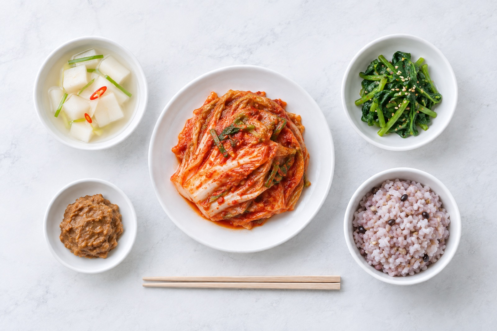
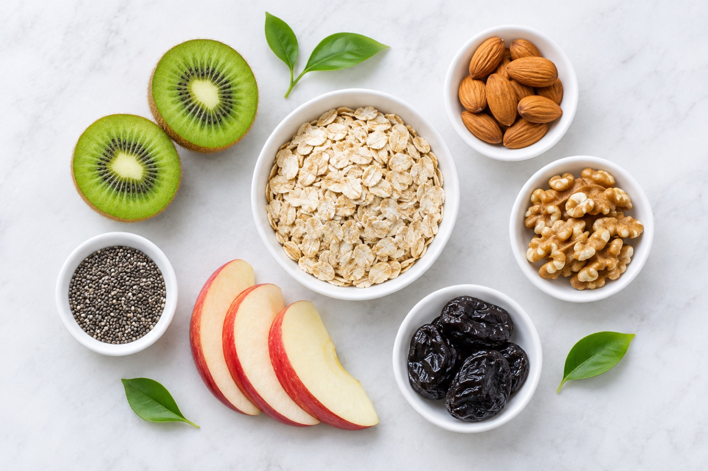
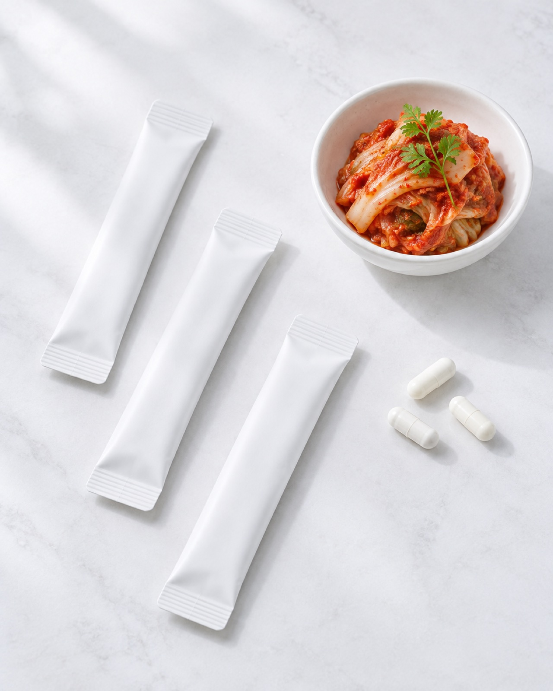
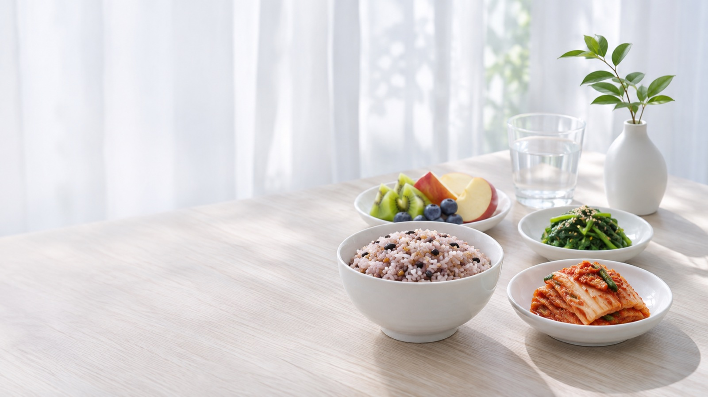

Gut Health
김치 한 접시에 담긴 미생물 이야기
3,500여 개의 유산균은 어디에서 왔을까? 발효식품과 장내 미생물의 관계를 알아봅니다.
마이크로바이옴 R&D 센터 검수
Learn · K-Lifestyle Wellness
기다림으로 맛을 내는 발효, 정성으로 빚는 보양. 한국인의 일상에 오래 깃든 웰니스의 지혜를 과학으로 다시 읽고, 바쁜 오늘의 루틴으로 제안합니다.

Wellness Journal
연구원이 검수한 건강 정보를 쉽고 정확한 언어로 전합니다.
콘텐츠 예시아래 글 6편은 메뉴 제안을 위한 콘텐츠 예시예요.

3,500여 개의 유산균은 어디에서 왔을까? 발효식품과 장내 미생물의 관계를 알아봅니다.
마이크로바이옴 R&D 센터 검수

2014년 스탠퍼드대 연구진이 제시한 개념, MAC을 일상 식단에서 챙기는 방법.
마이크로바이옴 R&D 센터 검수
빛, 온도, 습관. 편안한 밤을 위해, 작은 변화부터 시작해 보세요.
제품개발팀 검수
무리하지 않고 꾸준히. 계절별로 즐기는 서울 근교 산책 코스.
제품개발팀 검수

보장균수, 장용성 캡슐, 상온 보관까지. 유산균 고를 때 알아두면 좋은 것들.
마이크로바이옴 R&D 센터 검수

제철 채소와 발효 반찬으로 완성하는 K-웰니스 아침 식단.
제품개발팀 검수
K-Wellness Heritage
발효와 보양, 오래된 지혜를 현대인의 일상에 맞게 다시 설계합니다.
Wellness Letter
계절별 루틴과 최신 연구 소식, 신제품 소식을 가장 먼저 받아보세요.